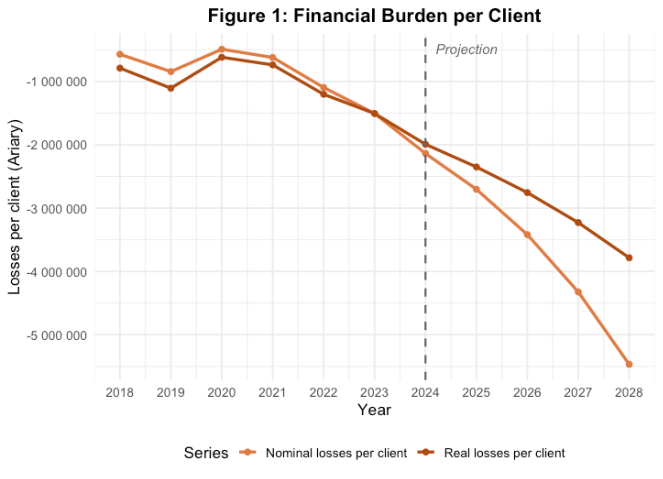
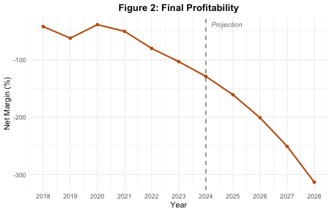

The Dilemma Behind Madagascar's Utility Shortages
Only 36 percent of the Malagasy population has access to electricity. The sector is monopolised by the national utility company, Jirama, which has been financially and operationally deficient. Over the past six years, the company's real losses per client and net margin have worsened, and none of the reform attempts have succeeded. This has recently triggered a highly unstable political situation and Jirama lies at the heart of the country's development challenges.
Exploratory policy recommendations:
- Apply the necessary tariff increase required to at least break even on operational costs.
- Design a targeted subsidy plan to address the current debt burden.
The company’s expected loss per client in 2025 will reach 2.35 million Ariary. In a scenario where operationality remains the same, the deficit will continue to grow. Commercial revenues cover only half of operating costs, forcing the government to provide large subsidies that weigh on public finances. Current tariffs are far from cost-recovery levels, and an increase is necessary. Moreover, Jirama is facing severe risks, with a net margin of -161 percent in 2025. This means that for every 100 ariary earned, Jirama is losing 161.
Recurring water and electricity shortages have been caused by unpaid debts to suppliers, and any tariff adjustment is likely to face strong social opposition. But with no real competition in the sector, reforms will be painful but unavoidable.
These findings are particularly relevant in the context of the current political crisis. While short-term fiscal measures may temporarily satisfy social demands, Jirama will remain trapped in a cycle of inefficiency and dependency without proper operational and tariff reform. While expanding electricity access is necessary, ensuring the sustainability of Jirama is an essential prerequisite for long-term development.


M.H